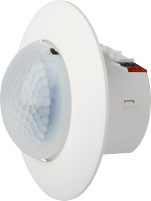
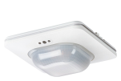
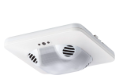

UP 258 product description
 | UP 258D12, Presence detector, brightness sensor - Motion and brightness sensor
- Presence detection with 3 independent output channels
- 2-level light controller for light switching
Order number: 5WG1 258-2DB12 Download data sheet: 5WG12582DB12 |
 | UP 258D3x, Presence detector WIDE
- PIR motion sensor
- Brightness sensor
- 2-point brightness controller or constant light level controller
- Temperature sensor and controller
Order number: 5WG1 258-2DB31 (white variant) 5WG1 258-2DB33 (black variant)
Download data sheet: 5WG12582DB31 |
| UP 258D41, Presence detector WIDE pro - PIR motion sensor
- Brightness sensor
- 2-point brightness controller or constant light level controller
- Temperature sensor and controller
- Relative humidity sensor and controller
Order number: 5WG1 258-2DB41 Download data sheet: 5WG12582DB41 |
| UP 258D51, Presence detector WIDE multi - PIR motion sensor
- Brightness sensor
- 2-point brightness controller or constant light level controller
- Temperature sensor and controller
- Relative humidity sensor and controller
- CO2 sensor and air quality controller
Order number: 5WG1 258-2DB51 Download data sheet: 5WG12582DB51 |
 | UP 258D61, Presence detector WIDE DualTech - Combined PIR and ultrasonic motion sensor
- Brightness sensor
- 2-point brightness controller or constant light level controller
- Temperature sensor and controller
Order number: 5WG1 258-2DB61 Download data sheet: 5WG12582DB61 |